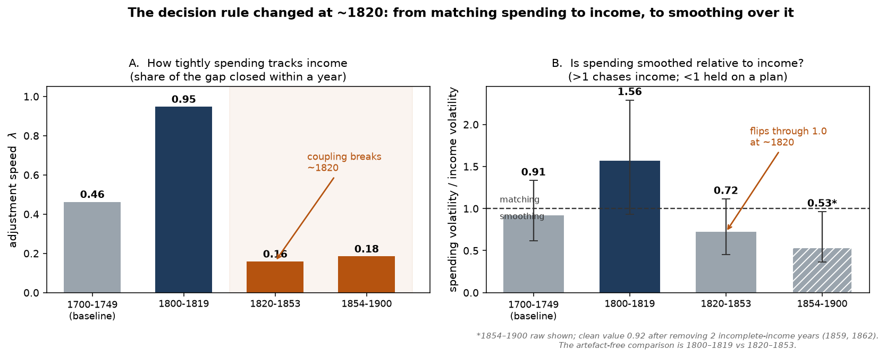
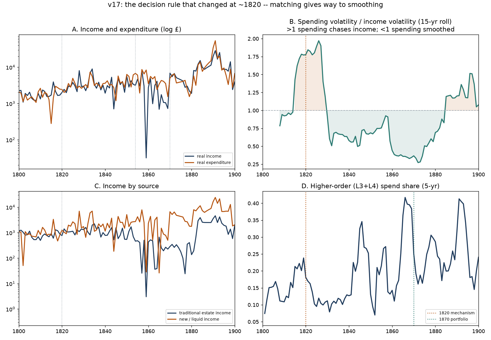

The question for this week: Last week showed that the link between what Oxford earned and what it spent breaks around 1820. What organisational decision rule actually changed? Rather than adding another breakpoint, we ask what rule the college ran before 1820, what it ran after, and what let spending come loose from income.
The rule changed from “match spending to this year's receipts” to “spend against the stable core, and let the new money pass through.” Before 1820, spending closed 95% of any gap with income within a year and swung more than income itself — spending led, and the estate was worked to meet it. After 1820, spending stops tracking total income (adjustment speed falls to 0.16) but keeps tracking the traditional land-and-church endowment (0.40, still significant). Because that core is smooth while the new income streams are lumpy, spending ends up smoother than income: the volatility ratio flips from 1.56 before 1820 to 0.72 after. Only later — after 1854, visibly by 1870 — does the spending portfolio itself move toward higher-order activity. The rule changed first; the portfolio changed decades later.
Last week measured timing: it treated income and expenditure as one coupled system and found that the adjustment speed — the share of any income–spending gap that spending closes within a year — collapses from 0.95 to 0.16 around 1820, a generation before the 1854 reform. Last week we stopped there, and said so plainly: “what happened around 1820, we do not claim to know.”
This week supplies the mechanism. We do not re-open the break date. We ask a different question:
Before 1820 the rule was “spend what the estate earns.” What rule replaced it, and what let spending come loose from income?
Four tests answer it, each attacking the question from a different side. Two of them close off tempting explanations, which is what makes the surviving answer sharp. Classification into L1–L4 and all cleaning are unchanged from earlier weeks.
The same annual series as last week, over 1800–1900 (95 of 101 years have records; 6 interior gaps interpolated), with 1700–1749 as a pre-Industrial-Revolution baseline. All money is inflation-adjusted using the Phelps Brown–Hopkins index. This week we additionally split income by source:
| Income series | What it is |
|---|---|
| Traditional estate income | land rents plus ecclesiastical income — the endowment's core produce |
| New / liquid income | everything else: fees, securities and dividends, banked funds, benefactions, administrative receipts |
| Method | What it actually does | Where we use it |
|---|---|---|
| Error-correction model | Measures how fast spending closes the gap when it drifts from an income series. Run against total income and against traditional income separately, to see which one spending is anchored to. | Test 1 |
| Relative volatility | The standard deviation of spending's year-on-year change divided by that of income. Above 1, spending swings more than income; below 1, spending is smoother. | Test 2 |
| Granger direction test | Asks, within each period, whether the past of one series predicts the other. Prediction, not proof of cause. | Test 2 |
| Bootstrap confidence intervals | Re-samples the years 2,000 times to put an honest interval on each ratio, because the tight era rests on only 19 years. | Test 2 |
| Category composition shares | The share of spending going to standing commitments (salaries, upkeep) versus discretionary items. | Test 4 |
Every number below is reproduced by analysis_v17.py, which runs
deterministically from the ledger data.
If the pre-1820 rule was “spend what the estate earns,” then spending should track traditional income specifically. We estimate the adjustment speed twice — once against total income, once against the traditional land-and-church endowment alone — in each period.
| Era | speed vs total income | p | speed vs traditional income | p |
|---|---|---|---|---|
| 1700–1749 (baseline) | 0.53 | <0.001 | 0.44 | <0.001 |
| 1800–1819 (tight) | 0.95 | <0.001 | 0.90 | 0.004 |
| 1820–1853 (loose) | 0.16 | 0.63 | 0.40 | 0.039 |
| 1854–1900 | 0.18 | 0.02 | 0.13 | 0.025 |
Before 1820, spending tracked both total income (0.95) and the traditional endowment (0.90) tightly. At 1820 the tie to total income collapses (0.16, no longer distinguishable from zero) — but the tie to the traditional land-and-church endowment survives (0.40, still statistically significant). Spending did not switch to the new revenue streams; it fell back on the stable core and let the volatile new money grow without responding to it. This reproduces exactly what last week found when it tried alternative definitions of income. It is the key to the next test: spending is anchored to the smooth part of the accounts, which is what makes it smooth.
One honest caveat on this test. Spending is only about 0.9× the size of traditional income early on but grows to roughly 12× it by the end of the century, so the traditional-income tie is estimated against a gap that widens over time. Within each period the gap is still mean-reverting (so the model is valid there), but read the traditional-anchor figure as a direction — spending stays tied to the core — rather than a precise number. The tie to total income, by contrast, is measured against a stable ratio and is clean.
If spending has stopped chasing total income, what is it doing instead? We measure spending's volatility relative to income's, period by period, and separately test the direction of influence within each period.
| Era | income volatility | spending volatility | ratio (spending / income) | 95% interval |
|---|---|---|---|---|
| 1700–1749 | 0.93 | 0.85 | 0.91 | 0.62–1.33 |
| 1800–1819 (tight) | 0.41 | 0.64 | 1.56 | 0.93–2.29 |
| 1820–1853 (loose) | 0.68 | 0.49 | 0.72 | 0.46–1.11 |
| 1854–1900 | 1.19 | 0.64 | 0.92 | 0.36–0.96 |
Before 1820 the ratio is 1.56: spending swings more than income, because spending leads and income follows. After 1820 it is 0.72: spending is now smoother than income, which is itself turning lumpier as new streams arrive. The rule has gone from matching income by hard yearly adjustment to smoothing over it.
| Era | Which side leads | p |
|---|---|---|
| 1800–1819 (tight) | expenditure leads income | 0.004 |
| 1820–1853 (loose) | income leads expenditure | 0.009 |
| 1854–1900 | neither leads | 0.72 / 0.81 |
In the tight era spending came first and the estate was worked to meet it. After 1820 income comes first and spending responds to it on a planned path — exactly what you expect once spending is set against the stable core rather than chasing each year's receipts. This is the same flip we reported last week; here it sits alongside the volatility result as two views of one change.

A first pass reported the post-1854 ratio as 0.53. On review, that value was inflated by two incomplete-income extraction years: 1859 records income of about £32 against £8,353 of spending, from just 15 income line-items — a missing page, not a real event. Removing 1859 and 1862 raises the post-1854 ratio to 0.92. The load-bearing comparison is 1800–1819 against 1820–1853, which contains no such years and is unaffected. A direct test of that difference — bootstrapping the change in the ratio rather than reading two overlapping intervals — confirms the flip is significant (95% interval 0.12 to 1.65; 99% of resamples show the ratio falling). It agrees with the direction flip above and with last week's adjustment-speed collapse, so three separate signatures point the same way.
If spending is held smooth while income fluctuates, something has to absorb the difference — a reserve drawn down in lean years and topped up in good ones. We reconstructed the balance, carry-forward, and arrears entries that earlier analyses removed as accounting artefacts, and looked for that buffer directly.
We cannot see the reserve cleanly, and we report that rather than dress it up. Explicit balance and carry-forward entries are sparse (about 294 across two centuries), and after 1854 the arrears entries nearly disappear from the extracted record. The buffer is the necessary counterpart of the smoothing we observe in the flows, but the ledger does not record the reserve as a running stock densely enough to measure it. This is the clearest thing to chase in the archive next; for now it is an honest gap, not a result.
A competing explanation: perhaps spending came loose from income only because it filled up with fixed obligations — salaries, upkeep — that must be paid regardless of receipts. We measured the share of spending going to standing commitments over time.
| Era | standing-commitment share of spending |
|---|---|
| 1700–1749 | 0.72 |
| 1800–1819 | 0.54 |
| 1820–1853 | 0.47 |
| 1854–1900 | 0.38 |
The opposite of the competing explanation. The standing-commitment share falls steadily; spending moved toward discretionary items, not away from them. The decoupling is not fixed costs hardening — if anything, the college had more room to plan, not less.
Why does a change in a budgeting rule matter? Because a hand-to-mouth rule — every pound out matched by a pound in, this year — cannot fund a multi-year investment in new capability or a new mission. Loosening the rule is what makes the later transformation affordable, and the order of events in the data is exactly that of a precondition.
| Era | higher-order (L3+L4) share of spending |
|---|---|
| 1800–1819 (rule tight) | 0.163 |
| 1820–1853 (rule loosened) | 0.160 |
| 1854–1900 | 0.247 |
At the 1820 rule change, higher-order spending has not moved at all (0.163 → 0.160). It rises only after 1854, and the visible shift in the portfolio — which last week's analysis dates independently to 1870 — comes half a century after the rule changed. The rule is the leading indicator; the portfolio is the last thing to move.

Read as a change in a decision rule rather than a change in a budget, the case yields three concrete observations.
A single institution does not establish a general rule. But it identifies which measurement carries the earliest signal: not the size of the transformation budget, but the strength — and the anchor — of the link between what an organisation earns and what it is willing to spend.
Sample size. Annual data, about 100 observations in the main window. We claim prediction and timing, not proven causation; the direction tests establish precedence, not mechanism.
The tight era is short. 1800–1819 rests on only 19 usable years. The estimates there are precise and survive the robustness re-runs, but it is a short window, and the bootstrap intervals on the volatility ratios overlap slightly. The finding rests on three signatures agreeing — the adjustment-speed collapse, the volatility flip, and the direction flip — not on any single number.
The reserve is not directly measured. Test 3's buffer is inferred from the flows; the ledger does not record it as a stock densely enough to observe. Identifying the smoothing vehicle is the natural next step in the archive.
A number was corrected mid-analysis. The post-1854 volatility ratio was revised from 0.53 to 0.92 after two incomplete-income years were found and removed. The 1820 comparison is unaffected.
Every number in this report is reproduced by analysis_v17.py.
Supporting tables: t1_anchor_shift.csv, t2_relative_volatility.csv,
t2_ratio_robustness.csv, t2_direction.csv, t4_composition.csv,
link_higher_order.csv. Full write-up: FINDINGS_v17.md.